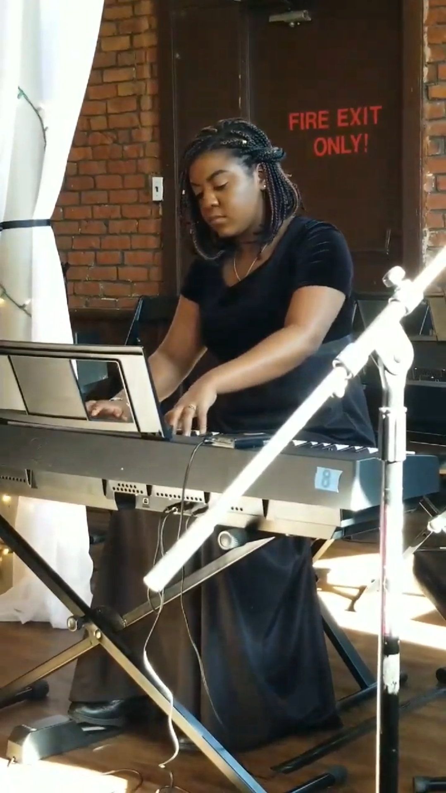
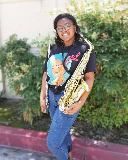
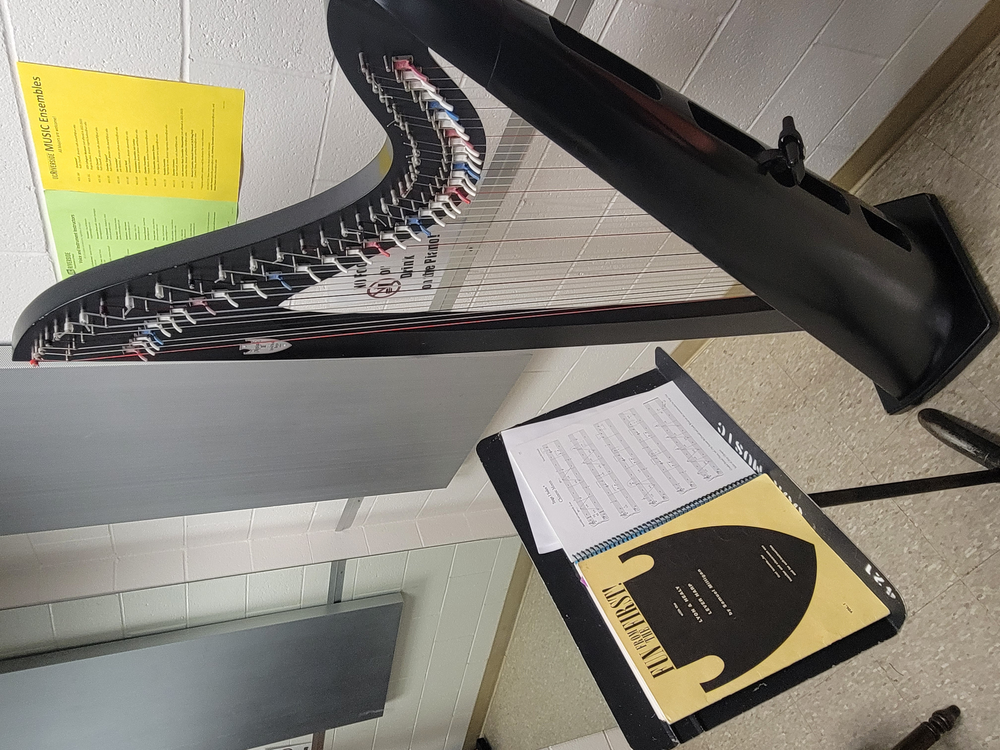
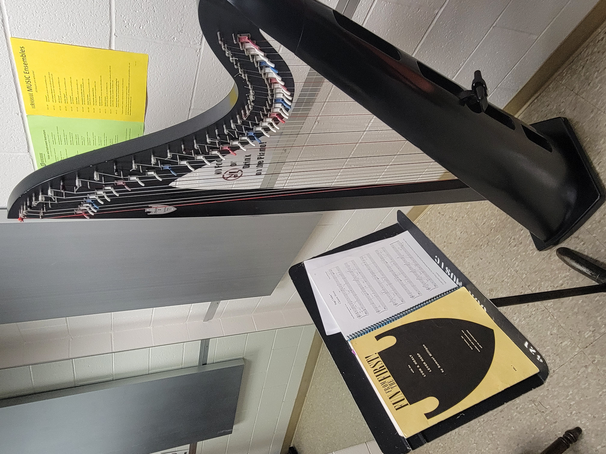
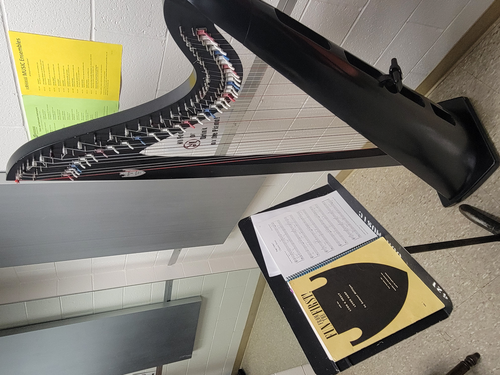

Mariah Miller
My career goals are to become a therapist as well as a psychologist. To further elaborate, I have considered becoming a musical therapist due to my passion to play music as an instrumentalist. My educational plan to meet these goals are to attend and study at RCC for two years to get my general education, then transfer to UCR to broaden my studies in psychology. I selected my current major and career goal because I feel that I have been through a significant amount of life experiences that have impacted me deeply--experiences that are quite heavy if they were to be brought up in casual conversation. As a result of my goals, I want to bring change to society by reaching out to individuals who need assistance with their journey through life, and I could do this through the power of therapy. I find mental health and processes interesting. The way people think and communicate with each other has led me to wonder why we do things the way we do. I graduated from Encore High School for the Arts in Downtown Riverside. I decided to attend Riverside Community College for two years before I transfer due to financial reasons. Since I am so musical, I want to get involved with more orchestras and bands as well When transferring to UCR, I intend to double major in music and psychology. While completing my general education courses for psychology, I find myself growing more and more passionate for it with each passing semester. I feel that I am ready to succeed in my upper division course for psychology and hopefully music. After graduating high school and beginning my career, I have learned to set small goals for myself. Moreover, nothing beats a failure but a try. I want to be able to cause change for the better, beginning with something small like being admitted into UCR.
I am a multi-instrumentalist musician, with instruments being wind instruments, such as flute, clarinet, saxophone, as well as piano. Practicing, playing, and performing on flute (my primary instrument) are my pastimes but also an integral part of my life. I would say that my greatest talent and skill is being a musician. It is what I am most passionate about today! What I find most interesting is that I initially did not want to be a musician. Matter of fact, I was forced to join my school’s band in the sixth grade by my mother. The day she told me that she signed me up, I protested. After a couple of class sessions, I picked up and fell in love with playing the flute. In my first year, I was obsessed with learning my new passion, making practice not feel like work. As a result of this, in seventh and eight grades, I was able to participate in honor bands above my recommended level. I learned to love to perform. I tried out for marching band ninth grade and began to branch out into many forms of my art, such as jazz, classical, and street band music. Mid high school, I transferred to a school of the performing arts and picked up more instruments such as alto saxophone, piano, and clarinet. I even learned how to sing in a choir. Outside of school, I created and still do covers of various genres of songs, ranging from Mozart to Selena Gomez. I am thankful that my eyes have been opened to music. Before it, I did not have an artistic outlet like I do when I play music.
Some accomplishments and achievements I am proud of are receiving first place in Encore High School for the Arts’ poetry competition, being rewarded for performing for Altura Credit Union’s convention at the Riverside Convention Center, and receiving my master’s distinction in music at Encore High School for the Arts.
Experience
Receiving/Support
• Received shipments from incoming trucks
• Stocked products on shelves
• Customer service
Baker
• Responsible for baking, shelving, and foraging baked goods
• Maintained bakery
Music Theory Teaching Assistant
• Assisted teaching students the fundamentals of basic music theory
• Transferred messages from teacher to office
• Maintained classroom.
Education
UC Riverside
Portfolio


 

